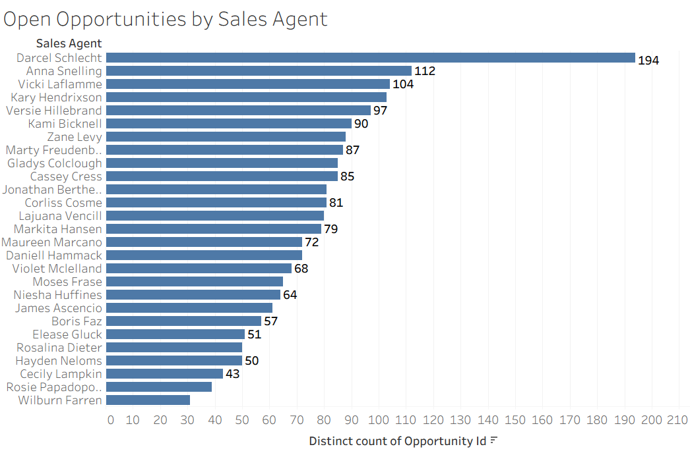
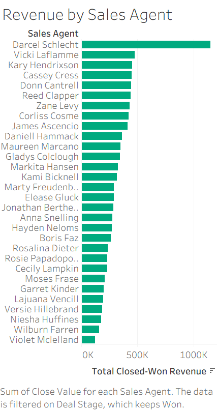

Project 001 — Sales Pipeline Health & Revenue Performance
An analytical case study using CRM data to support sales leadership and operational decision-making
01 | Ask
Business Context
Sales leaders need visibility into both the performance of their sales teams and the health of the opportunities moving through their pipeline. Understanding how many opportunities are open, how they are distributed, how effectively sales teams convert opportunities and how long deals take to close can help leadership identify areas requiring attention.
This case study examines a simulated B2B computer hardware sales organization using the CRM Sales Opportunities dataset provided by Maven Analytics.
Drawing on my professional background in sales and business development, I approached this project from a business-first perspective: identifying the information sales leaders need to make decisions and determining how the available CRM data could support those decisions.
Business Task
Assess the health of a B2B sales pipeline and the effectiveness of its sales process by examining opportunity workload, pipeline stage distribution, closed sales outcomes, conversion, sales cycle duration and opportunity aging. Identify potential operational bottlenecks and opportunities for management intervention, evaluate the available evidence of historical revenue performance, and determine what additional information is required for reliable forecasting and performance trend analysis.
Analytical Objectives
The analysis is designed to answer the following business questions:
- How many opportunities remain open, and how are they distributed across sales agents and pipeline stages?
- How do closed sales outcomes and historical conversion rates differ across sales agents?
- How long do opportunities typically take to progress from engagement to closure?
- Which sales agents have older engaging opportunities that may warrant further investigation?
- What can historical closed-won revenue reveal about sales performance, and what additional information is needed to evaluate future revenue potential?
Stakeholders and Intended Audience
The intended audience consists of simulated business stakeholders, including the Vice President of Sales, sales managers and Revenue Operations leadership.
The Vice President of Sales requires a high-level understanding of pipeline health and sales performance. Sales managers need more detailed visibility into individual opportunity workloads, closed outcomes and aging opportunities. Revenue Operations leadership requires consistent performance measures, reliable CRM data and an understanding of the information needed to support reporting and forecasting.
Key Performance Measures
The selected measures include:
- Open opportunity volume: The number of distinct opportunities in the Prospecting and Engaging stages.
- Pipeline stage distribution: The composition of open opportunities by stage and sales agent.
- Closed sales outcomes: The number of opportunities classified as Won or Lost.
- Historical win rate: Won opportunities as a proportion of all closed opportunities.
- Sales cycle duration: The elapsed time between engagement and closure for completed opportunities.
- Engaging opportunity age: The elapsed time since engagement for opportunities that remain in the Engaging stage, measured against a defined historical reference date.
- Historical closed-won revenue: The recorded closing value of opportunities classified as Won.
These measures provide complementary perspectives on workload, sales effectiveness, process speed and historical financial performance.
Scope and Intended Business Value
The project uses historical, simulated CRM data rather than a live sales environment. Its purpose is to identify patterns, develop evidence-based recommendations and demonstrate how analytical reporting can support sales management decisions.
The initial dashboard focuses on operational pipeline health. Historical revenue and conversion measures complement this analysis, while more extensive revenue reporting and quarter-over-quarter comparisons represent opportunities for further exploration.
The analysis does not assume that opportunity volume represents future revenue or that differences between sales agents establish individual performance problems. Recommendations will distinguish observed patterns from hypotheses requiring additional investigation.
Expected Deliverables
The project will produce a documented analytical case study, a Tableau dashboard, validated findings, management recommendations and a set of proposed analyses for further investigation.
The ultimate objective is to demonstrate how CRM data can be transformed into meaningful business intelligence that supports pipeline review, sales performance evaluation and operational decision-making.
02 | Prepare
Data Source and Selection
This case study uses the CRM Sales Opportunities dataset published by Maven Analytics, which represents a simulated B2B computer hardware sales organization.
The dataset was selected because it closely aligns with the business questions encountered in Sales Operations, Revenue Operations and CRM Analytics. Its opportunity-level records provide a foundation for examining sales pipeline composition, sales agent performance, historical outcomes, opportunity aging and revenue performance.
Source: Maven Analytics — CRM Sales Opportunities https://mavenanalytics.io/data-playground/crm-sales-opportunities
The original dataset is supplied as a ZIP archive containing four business data tables and a supporting data dictionary.
Data Organization and Structure
The sales pipeline table serves as the primary source for the current analysis. Its level of detail, or grain, is one record per sales opportunity, identified by a unique opportunity ID.
The account, product and sales team tables provide additional business context and support potential analysis by customer characteristics, product category, sales manager and region.
These tables can be related through their corresponding account, product and sales agent fields. Their integration requires validation of matching values, relationship cardinality and the preservation of opportunity records.
The supporting data dictionary was used to establish the intended meaning of the source fields. The current dashboard primarily examines opportunity-level measures; the exact supporting tables incorporated into its Tableau data model remain subject to workbook verification.
Understanding the Source Fields
Several field definitions are particularly important to the business analysis:
These distinctions prevent the inappropriate use of customer revenue or product list prices as substitutes for missing opportunity values.
Historical Scope
The dataset contains 8,800 unique sales opportunities distributed across four recorded stages.
Recorded engagement dates range from October 20, 2016, through December 27, 2017. Recorded closing dates range from March 1 through December 31, 2017.
The data therefore supports retrospective analysis rather than real-time monitoring of a current sales pipeline. Calculations involving open opportunity age require a consistent historical reference date.
The source does not include an original opportunity creation date or a complete history of stage transitions. Consequently, it cannot establish how long every opportunity has existed or reconstruct historical pipeline snapshots reliably.
Preliminary Data Exploration and Analytical Adaptation
An important discovery during the initial exploration was that open opportunities do not contain recorded closing values. Prospecting opportunities also lack engagement dates, while both Prospecting and Engaging opportunities lack completed closing dates.
This finding required an adjustment to the analytical approach.
A financial evaluation of the open pipeline would ordinarily benefit from estimated opportunity values, expected closing dates and closing probabilities. These fields are not included in the dataset.
Drawing on my professional experience with CRM opportunity management, I recognized that assigning unsupported financial estimates would create a misleading representation of pipeline potential.
I therefore proposed using opportunity counts as a measurable alternative for evaluating the open pipeline. This enabled the analysis to focus on opportunity workload, stage distribution and the operational characteristics of the sales process.
Historical Won and Lost outcomes remain available for evaluating closed sales performance, conversion and engagement-to-close duration. Recorded closing values also support historical revenue analysis.
This adaptation preserves the distinction between operational pipeline health, historical financial performance and future revenue potential.
Data Credibility — ROCCC Assessment
Reliable
The dataset is appropriate for an educational CRM analytics project. A preliminary source audit confirmed that opportunity identifiers are unique, stage counts reconcile to the total population and closed opportunities contain the dates required for duration analysis.
However, the dataset represents a simulated organization and cannot be treated as independently verified commercial transaction data.
Original
The dataset was obtained from Maven Analytics, its identified publisher, and includes accompanying field definitions. It is not an unattributed third-party reproduction. Its simulated nature is acknowledged throughout the case study.
Comprehensive
The dataset contains sufficient information to examine opportunity workload, pipeline composition, historical outcomes, sales cycle duration and engaging opportunity age.
Its limitations include the absence of estimated deal values, expected close dates, closing probabilities, sales targets, opportunity creation dates and detailed stage-transition histories. These omissions restrict forecasting, quota attainment analysis and historical pipeline reconstruction.
Current
The records cover historical activity from 2016 through 2017. Although the dataset is not current, its structure remains relevant to demonstrating CRM analytics and business intelligence methodology.
Findings are interpreted within the historical period represented by the data.
Cited
The source publisher, dataset title, publication page and accompanying data dictionary are identified. The case study also references Google's official independent capstone roadmap as its educational framework.
Preliminary Data Integrity Assessment
An AI-assisted audit of the original source files was conducted during project recovery on November 14, 2026, to supplement the earlier exploration and validate the available data.
The audit established that:
- All 8,800 opportunity IDs are unique and non-null.
- No exact duplicate rows were identified in the sales pipeline table.
- The four deal-stage populations reconcile to the total opportunity count.
- The 500 Prospecting opportunities have no engagement dates.
- All 2,089 open opportunities lack closing dates and closing values.
- All 6,711 closed opportunities contain engagement dates, closing dates and closing values.
- Lost opportunities have recorded closing values of zero.
- No negative engagement-to-close durations were identified.
- The account, product and sales agent identifiers are unique within their respective reference tables.
The audit also identified data quality considerations requiring attention before expanded analysis:
- Product naming inconsistency. The sales pipeline contains 1,480 records using the product name GTXPro, while the product reference table uses GTX Pro. This discrepancy could prevent correct matching during product-level integration.
- Missing customer accounts. A total of 1,425 open opportunities lack an account name, including 337 Prospecting and 1,088 Engaging records. No closed opportunities lack an account name. The underlying reason for these missing values is not established.
- Category consistency. The accounts table contains the sector label “technolgy,” which requires review before sector-level reporting.
- Optional company relationships. The accounts table contains 70 missing subsidiary_of values. These should not automatically be treated as errors because a company may not have a parent organization.
The audit findings identify potential preparation and cleaning requirements. They do not establish that the original source files have been modified or that the corresponding corrections have already been implemented in Tableau.
Data Limitations and Analytical Implications
The source data supports the selected business task, subject to several important limitations.
First, opportunity volume measures the number of records assigned to a sales agent, not the effort required to manage them, their potential revenue or the agent's available capacity.
Second, a zero closing value for a Lost opportunity does not establish the potential financial value of that opportunity before it was lost.
Third, the absence of estimated opportunity values, expected close dates and probabilities prevents reliable calculation of open pipeline dollar value or a weighted revenue forecast.
Fourth, engagement dates and closing dates support duration analysis, but the dataset does not contain the complete history of customer interactions or stage changes. An older engaging opportunity is not necessarily inactive or stalled.
Finally, the dataset does not include sales quotas, targets or evidence of implemented business interventions. The analysis therefore cannot establish quota attainment or actual improvements resulting from its recommendations.
Data Management, Privacy and Licensing
The original source archive is retained as the reference dataset. The preliminary recovery audit was performed without modifying the original CSV files.
The source represents a simulated business environment and does not contain verified confidential records from an actual employer or client. The case study will identify the data as simulated and will not imply that its findings represent actual company performance.
The dataset publisher and source page will be credited in the published portfolio. The applicable licensing and redistribution terms must be confirmed before making raw data files or downloadable workbook extracts publicly available.
The final Process section will document the actual working-file organization, transformations, calculation definitions and validation steps used in Tableau.
Preparation Summary
The data preparation phase established that the available CRM records are suitable for evaluating operational pipeline health and historical sales performance, while identifying important limitations affecting financial forecasting and time-based analysis.
The discovery of missing open opportunity values shaped the project's analytical direction. Rather than introducing unsupported estimates, the analysis uses measurable operational indicators to examine workload, sales outcomes, process duration and opportunity aging.
These measures provide the foundation for the subsequent Process and Analyze phases, where the data transformations, calculation methods and business findings will be documented and validated.
3. PROCESS — Data Preparation, Transformation & Validation
The sales pipeline dataset was imported into Tableau Desktop and used as the primary analytical source. The analysis was conducted at the opportunity level, using Opportunity ID as the unique identifier.
Missing closing values for open opportunities were retained rather than replaced with zero. These records represent potential business that has not yet reached a recorded financial outcome. Consequently, open pipeline health was evaluated using opportunity volume, stage distribution and opportunity aging, while historical revenue analysis was restricted to Won opportunities.
Calculations and Analytical Methods
The following measures were developed to evaluate pipeline health, sales effectiveness and historical revenue performance.
Two calculated fields were implemented in Tableau:
Sales Cycle Duration (Days)
DATEDIFF('day', [engage_date], [close_date])Open Opportunity Age (Days)
DATEDIFF('day', [engage_date], #2017-12-31#)December 31, 2017, was used as the historical reference date for opportunity aging, rather than the current date. This maintains consistency with the dataset's recorded reporting period.
Data Validation
Validation focused on opportunity counts, chronological consistency and reconciliation of financial results.
A separate Tableau Revenue Validation worksheet confirmed 4,238 distinct Won opportunities. The Revenue by Sales Agent worksheet returned a total closing value of 10,005,534, reconciling with the source-data audit.
Analytical Scope and Limitations
The completed analysis supports historical sales performance comparisons and an assessment of the recorded open pipeline. It does not support reliable open pipeline valuation, individual salesperson capacity estimates or revenue forecasting because the necessary financial estimates, workload information and opportunity-level activity histories are unavailable.
Product, customer-sector and quarterly revenue analyses remain opportunities for future investigation.
Tools and Analytical Contribution
Tableau Desktop was used for calculated fields, filtering, aggregation, visualization and dashboard development. AI assistance supported source-data auditing, technical guidance, workbook inspection and case study drafting.
I developed the business questions, adapted the analysis to the available data, built the Tableau visualizations with guidance, performed revenue aggregation and validation, and independently investigated the relationship between salesperson performance and opportunity allocation.
4. ANALYZE — Key Findings & Business Implications
4.1 Pipeline Health: Opportunity Volume and Aging
The analysis identified 2,089 open opportunities, representing 23.7% of the 8,800 recorded opportunities. Of these, 1,589 were in Engaging and 500 were in Prospecting.
The average age of Engaging opportunities was more than four times the average historical sales cycle. This suggests that some open opportunities may require additional attention, qualification or follow-up.
However, open opportunity age and completed sales cycle duration measure different populations. The comparison identifies a potential pipeline management concern rather than proving that individual opportunities are stalled or unlikely to close.

4.2 Sales Performance: Looking Beyond Opportunity Volume
Darcel Schlecht initially stood out because he managed the largest open pipeline, with 194 opportunities. This raised a question about whether his high opportunity volume reflected difficulty converting deals into successful sales.
Further analysis changed my interpretation.
Darcel recorded 349 Won opportunities, a historical win rate of 63.1%, and an average sales cycle of 45.84 days. He also generated the highest closed-won revenue among the 30 sales agents, contributing 1,153,214, or 11.53% of total recorded revenue.
These findings demonstrate why opportunity volume alone is insufficient for evaluating salesperson performance. Darcel's large open pipeline exists alongside strong historical sales results. Rather than interpreting his open opportunities as evidence of poor performance, I identified a potential opportunity to improve workload distribution and support continued revenue generation.
4.3 Opportunity Allocation: Testing a Sales Collaboration Hypothesis
Drawing on my professional sales experience, I considered whether pairing a high-performing salesperson with a qualified colleague who manages fewer opportunities could improve opportunity coverage and overall team performance.
I identified Wilburn Farren as a potential candidate and compared his performance with Darcel's.
Wilburn manages approximately 84% fewer open opportunities while demonstrating a historical win rate 6.5 percentage points higher than Darcel's.
These results support investigating a collaborative selling arrangement. However, Wilburn's smaller historical deal volume and longer average sales cycle mean that his higher win rate should not be interpreted as evidence of superior overall sales performance.
Actual workload capacity, product expertise, customer relationships and compensation incentives would need to be evaluated before transferring opportunities.
4.4 Analytical Conclusion
The analysis demonstrates the value of evaluating pipeline health, conversion, sales cycle duration and revenue together. No single metric provides a complete picture of sales effectiveness.
The findings identify two priorities for sales leadership: reviewing aging opportunities and investigating whether more effective opportunity allocation could support high-performing agents and improve overall team results.
These are evidence-based opportunities for operational improvement, not proven causal relationships or guaranteed revenue increases.
5. SHARE — Communicating the Analytical Findings
The findings are presented through a Tableau dashboard and a supporting revenue visualization designed for sales leadership.
Pipeline Health Dashboard
The dashboard combines three executive KPIs with four analytical visualizations to communicate open opportunity volume, historical sales cycle duration, opportunity aging and salesperson-level performance.
The visualizations allow stakeholders to examine pipeline stage distribution, closed sales outcomes and differences in sales cycle duration and opportunity age across agents.

Revenue by Sales Agent
A ranked horizontal bar chart presents total closed-won revenue by salesperson, providing a financial perspective alongside the operational measures in the Pipeline Health dashboard.

Executive Takeaway
The analysis identified a substantial volume of aging open opportunities and meaningful differences in salesperson performance. Darcel Schlecht's leading revenue contribution, combined with his large open pipeline, illustrates why sales leadership should evaluate financial performance, conversion and workload together.
The findings support a closer review of aging opportunities and a targeted investigation into collaborative opportunity management.
6. ACT — Recommendations & Next Steps
Recommendation 1: Prioritize Aging Opportunities
Conduct a structured review of Engaging opportunities to determine which remain active, require additional follow-up or should be requalified.
Sales leadership should establish appropriate opportunity-aging thresholds and review exceptions regularly. The objective is to improve pipeline visibility and ensure that sales effort remains focused on viable opportunities.
Recommendation 2: Pilot Targeted Sales Collaboration
Evaluate a collaborative selling initiative between Darcel Schlecht and a qualified agent with a smaller open pipeline, such as Wilburn Farren.
Earlier-stage opportunities could be considered for reassignment, while established customer relationships could benefit from a collaborative approach that preserves continuity and recognizes the original salesperson's contribution.
Where appropriate, shared commission arrangements could incentivize collaboration while protecting the interests of both salespeople.
The pilot should be evaluated using conversion rates, sales cycle duration, opportunity aging and incremental closed-won revenue before broader implementation.
Recommendation 3: Strengthen CRM Reporting
Improve the completeness of opportunity-level financial estimates, customer information and activity histories. These additions would support more reliable pipeline valuation, workload assessment and revenue forecasting.
Future Analytical Opportunities
The dataset provides opportunities to extend the analysis through:
- Quarterly revenue performance and quarter-over-quarter growth, subject to comparable reporting-period coverage.
- Product performance by closed-won revenue, deal volume and conversion.
- Customer and industry-sector revenue analysis using validated relationships between the pipeline and account reference tables.
These investigations would help sales leadership understand the drivers of revenue performance and identify additional opportunities for commercial improvement.
Final Business Insight
Effective sales management requires more than identifying top performers. By combining revenue, conversion, pipeline volume and opportunity aging, sales leadership can develop a more comprehensive understanding of performance and investigate operational improvements that support both individual salespeople and organizational revenue objectives.